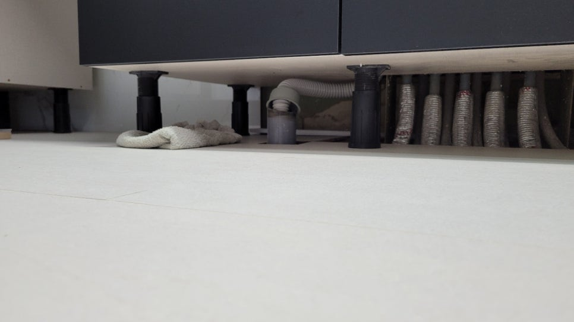
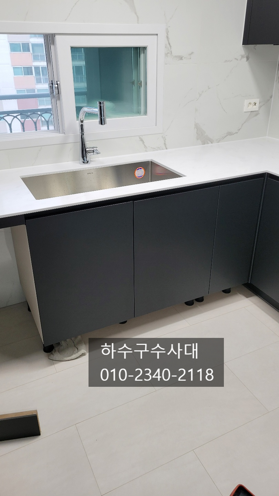
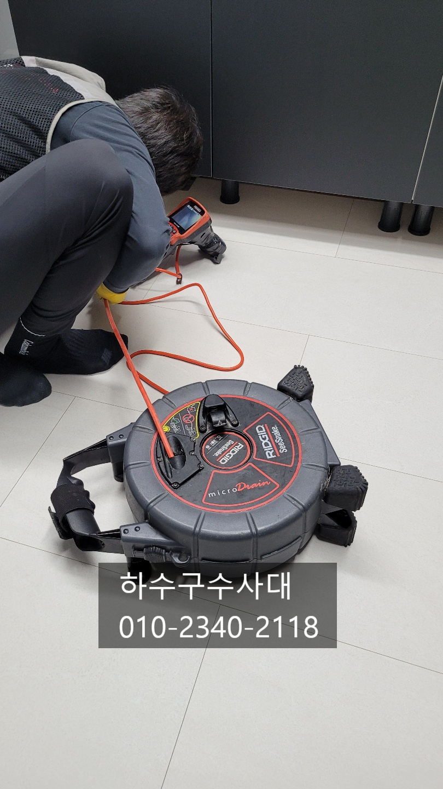
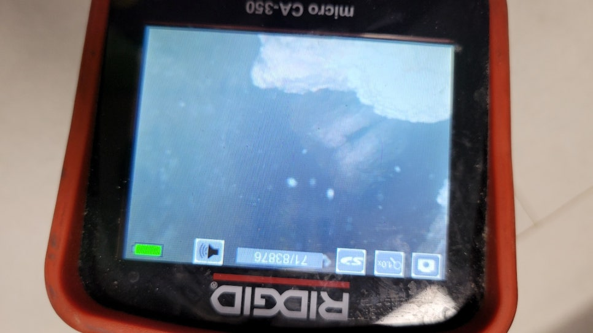
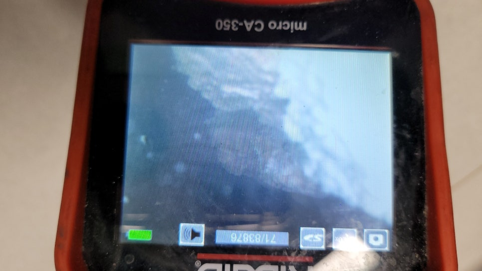
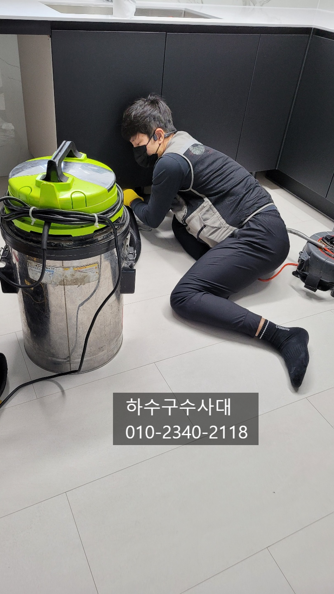

🏠 부평구 청천동화장실막힘 일신동 배수구뚫기 물샘전문업체
인천 부평구 싱크대막힘 전문 시공 후기

📋 작업 개요
- 위치: 인천 부평구, 부평구, 인천
- 서비스 유형: 싱크대막힘, 하수구막힘, 배관막힘, 누수수리, 역류해결, 뚫는업체, 배관청소, 고압세척, 설비공사
- 작업 일시: 2024. 6. 15. 10:25
- 업체명: 하수구수사대 (010-5615-2118)
🔍 문제 상황
부평하수구막힘 부개동 부평동 산곡동 씽크대막힘
안녕하세요
오늘은 아파트 리모델링 현장인데요
씽크대를 교체후 물을 내리는 과정에서
물이 역류하여 "하수구수사대"에서 출동하였습니다.
아파트 리모델링현장은 대부분 연식이 된 아파트라서
싱크대배관쪽에 기름슬러지가 쌓여있는경우가 많은데
공사를 하는 기간이 있고 싱크대물을 한동안 쓰지않으면서
기름슬러지가 딱딱하게 굳고 건조해지면서 일부 기름슬러지가
떨어져 막힘 증상이 생길수가 있습니다.
리모델링공사가 거의 끝난상태라 집안이 깨끗한 모습인데요
싱크대배관에서 물이 새어나와 걸레를 닦은 흔적이 있습니다.
겉으로 보기에는 깨끗해보이는데 배관속은 어떨지
내시경카메라로 확인해보기로 하였습니다.
하수구수사대
010-2340-2118

🔎 원인 분석
💡 전문가 진단: 하수구수사대010-2340-2118
내시경카메라로 확인해 보니 물이 차있고 기름덩어리가
둥둥 떠다니는 것을 확인할수 있었는데요
아무래도 배관구배가 좋지않아 물이 고여있어
기름이 잘 흘러나가지 못하고 쌓였나봅니다.
구배가 좋지않은곳이나 일반적은 배관도 마찬가지로
펑크린같은 배관세정제를 주기적으로 사용해주면
좋은데요 한달에한번 정도는 넣어서 배관에
붙은 기름기를 청소해주는것을 추천드립니다.
기름덩어리를 셕션장비로 흡입하여 빼주었는데요
씽크대배관은 일반적으로 50미리를 사용하여 기름덩어리
크기가 크지는 않지만 반대로 적은 덩어리라도 쉽게 막힘증상이
나타날수 있습니다.
석션을 한뒤 내시경으로 다시 확인을 해봤는데요
고여있던 물과 기름덩어리는 빠지고 배관에
붙어있는 기름슬러지가 아직도 긴 구간 터널처럼 남아 있는것을
확인할수 있습니다.
굉장히 오랜기간 쌓여있었을거고 막힘증상이 있었을텐데

🔧 작업 과정
이전에 거주하셨던 분들도 굉장히 조심스럽게 사용할수 밖에
없었을거에요.
이정도면 물을 한바가지만 부어도 역류하는 증상이
나타나는게 일반적이랍니다.
리모델링을 하면서 배관도 점검하는게 좋은데요
리모델링후 입주하고나서 싱크대배관에서 물이 새어나오면
난감할수 밖에 없습니다.
배관은 미리 점검하고 뚫어주거나 청소를 해주면
사고를 사전에 예방할수가 있으니 참고해주세요.
기름덩어리를 제거하고 배관을 깨끗히 청소를
해주는 작업을 진행하였는데요
스프링처럼 뚫어주는 장비로는 큰 효과를
보기가 어렵운게 사실입니다.
고압세척으로 할수도 있지만 실내에서는
적합하지 않은장비로 물을 고압으로 분사하기때문에
집안으로 물이 넘칠수가 있기때문에
싱크대배관에는 사용은 하지 않아요.
내시경카메라로 배관상태를 보면서 기름덩어리를 제거해
나가는것이 가장 좋은데요 장비 자체가 배관에 무리를 줄 걱정없이
제작되어 배관손상없이 작업이 가능합니다^^
작업을 하고난뒤 꼭 내시경카메라로 배관상태를
확인해봐야 하는데요 일부기사님들 물이 잘 나가는것만
확인하고 작업을 마무리하기도 하는데
꼼꼼히 확인해야 마음도 한결 가벼워 집니다.
작업전과 후의 차이를 사진으로 확실히 확인할수가
있는데요 이처럼 음식물이 내려가는 배관은 기름덩어리가
대부분 쌓이기 때문에 기름슬러지를 완벽하게


✅ 작업 완료
제거해 주는것이 좋아요.
마지막으로 물을 받아서 잘 내려가는지 테스트를 해보고
작업을 마무리하는데요 눈으로 확인해서 넘칠일이 없겠지만
그래도 한번도 확인해보는것이 좋아요.
저희 하수구수사대는
수도권전지역에서 활동하고 있으니
언제든지 연락주시기 바랍니다.




⚠️ 베란다 누수 및 방수 관리 방법
- ✅ 비가 많이 올 때 창틀 주변이나 아래층 천장에 얼룩이 생기는지 정기적으로 확인해 보세요.
- ✅ 우수관 주변 실리콘 마감이 들뜨거나 깨진 틈새가 있는지 손상 여부를 수시로 체크하세요.
- ✅ 베란다 바닥 타일의 줄눈(메지)이 소실되면 그 틈으로 물이 침투하여 누수가 유발됩니다.
- ✅ 누수 의심 증상 발견 시 방치하면 아래층 손실이 커지므로 즉시 전문가의 진단을 받으십시오.
💡 핵심 정리
- 확실한 장비 작업(내시경 점검 및 샤프트 스케일링)으로 원인을 뿌리 뽑습니다.
- 작업 후 1년 이내에 동일한 부위 재발 시 100% 무상 A/S 서비스를 보장합니다.
- 서울 · 경기 · 인천 전 지역에 24시간 언제든 긴급 출동할 수 있도록 항시 대기 중입니다.
❓ 자주 묻는 질문 (FAQ)
🚨 인천 부평구 싱크대막힘 문제로 고민이신가요?
정확한 원인 진단과 확실한 시공으로 재발 없는 해결을 약속드립니다.
24시간 긴급 출동 | 서울 · 경기 · 인천 전지역 | 1년 내 재발 시 무상 A/S